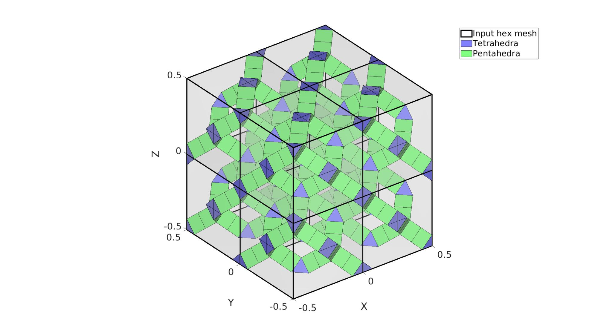

hex2rdl
Below is a demonstration of the features of the hex2rdl function
Contents
Syntax
[Ep,Et,Vs]=hex2rdl(Eh,V,inputStruct);
Description
This function creates rhombic-dodecahedron lattices and diamond lattices from hexahedral input meshes.
clear; close all; clc;
Plot settings
fontSize=25; faceAlpha1=0.25; edgeWidth=3; markerSize=25; cMap=gjet(6);
Examples
EXAMPLE 1: Converting a hexahedral element to tetrahedral elements
Creating an example hexahedral element set
testCase=2; switch testCase case 1 %Cube V=[0 0 0; 1 0 0; 1 1 0; 0 1 0; 0 0 1; 1 0 1; 1 1 1; 0 1 1;]-0.5; %nodes Eh=1:8; %Element case 2 %Subdivided cube V=[0 0 0; 1 0 0; 1 1 0; 0 1 0; 0 0 1; 1 0 1; 1 1 1; 0 1 1;]-0.5; %nodes Eh=1:8; %Element [Eh,V]=subHex(Eh,V,1); case 3 %Sphere hex mesh sphereRadius=2; %Creating sphere mesh optionStructSphereHexMesh.sphereRadius=sphereRadius; optionStructSphereHexMesh.coreRadius=sphereRadius/3; optionStructSphereHexMesh.numElementsMantel=2; optionStructSphereHexMesh.numElementsCore=4; optionStructSphereHexMesh.makeHollow=0; optionStructSphereHexMesh.outputStructType=2; [meshStruct]=hexMeshSphere(optionStructSphereHexMesh); % Access model element and patch data V=meshStruct.nodes; Eh=meshStruct.elements; end nSubPenta=1;
strutThickness=0.1; F=element2patch(Eh,V); d=mean(patchEdgeLengths(F,V)); shrinkFactor=strutThickness./(d.*(sqrt(2)./2)); inputStruct.latticePhaseType=1; % 1 = "bubble" centred, 2 = vertex centred, 3 = nested inputStruct.latticeType=2; % rhombic-dodecahedron (1) or Diamond (2) inputStruct.shrinkFactor=shrinkFactor; inputStruct.removeNonConnected=1; [Ep,Et,VT]=hex2rdl(Eh,V,inputStruct); %Create the mesh [Ep,VT]=subPenta(Ep,VT,nSubPenta,3); %Sub-divide pentahedra
Visualization of lattice meshes
% Convert tetrahedra and pentahedra to faces [Ft]=element2patch(Et,[],'tet4'); [Fp]=element2patch(Ep,[],'penta6'); % Convert original hexahedra to faces [Fh]=element2patch(Eh,[],'hex8');
cFigure; hold on; hp1=gpatch(Fh,V,'w','k',0.25,edgeWidth); hp2=gpatch(Ft,VT,'bw','k',1,1); % Color for flip type hp3=gpatch(Fp,VT,'gw','k',1,1); legend([hp1 hp2 hp3(1)],{'Input hex mesh','Tetrahedra','Pentahedra'}); axisGeom(gca,fontSize); camlight headlight; gdrawnow;

GIBBON www.gibboncode.org
Kevin Mattheus Moerman, gibbon.toolbox@gmail.com
GIBBON footer text
License: https://github.com/gibbonCode/GIBBON/blob/master/LICENSE
GIBBON: The Geometry and Image-based Bioengineering add-On. A toolbox for image segmentation, image-based modeling, meshing, and finite element analysis.
Copyright (C) 2006-2022 Kevin Mattheus Moerman and the GIBBON contributors
This program is free software: you can redistribute it and/or modify it under the terms of the GNU General Public License as published by the Free Software Foundation, either version 3 of the License, or (at your option) any later version.
This program is distributed in the hope that it will be useful, but WITHOUT ANY WARRANTY; without even the implied warranty of MERCHANTABILITY or FITNESS FOR A PARTICULAR PURPOSE. See the GNU General Public License for more details.
You should have received a copy of the GNU General Public License along with this program. If not, see http://www.gnu.org/licenses/.